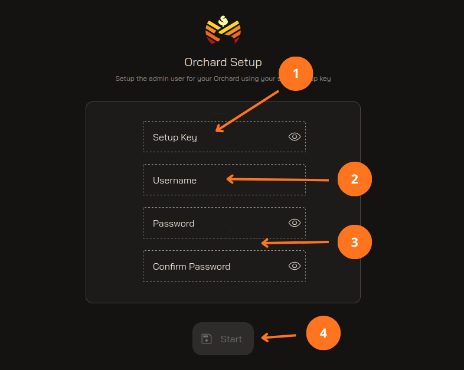
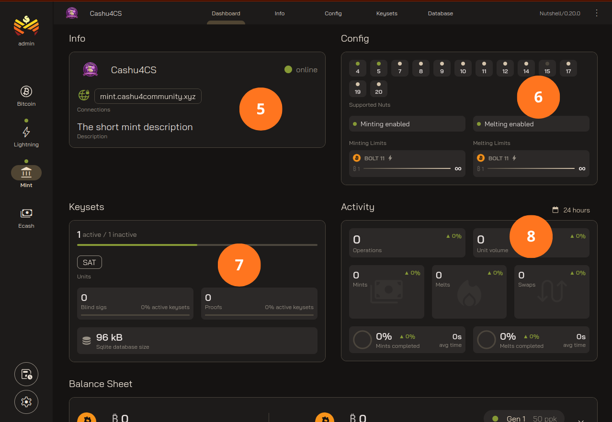
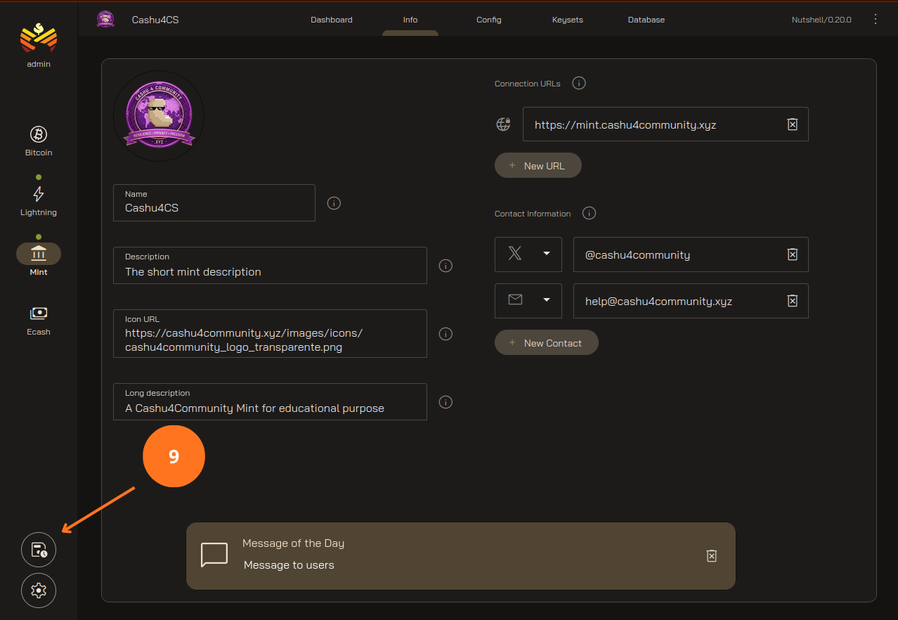
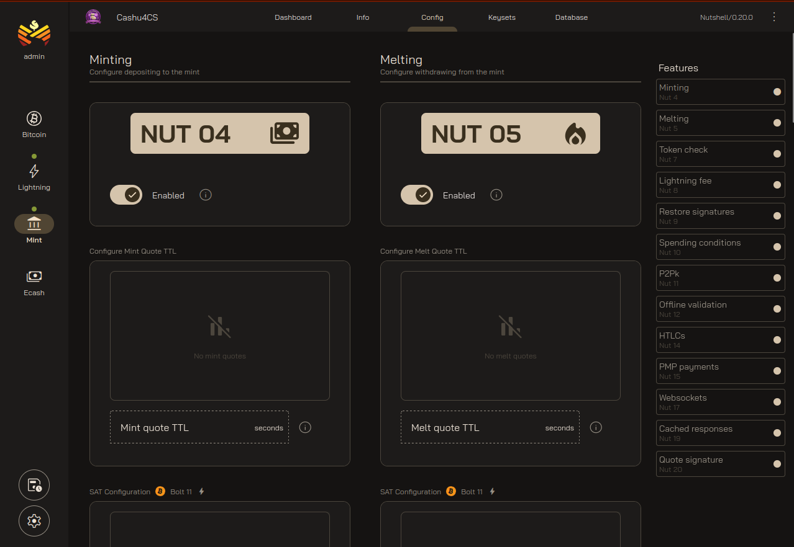
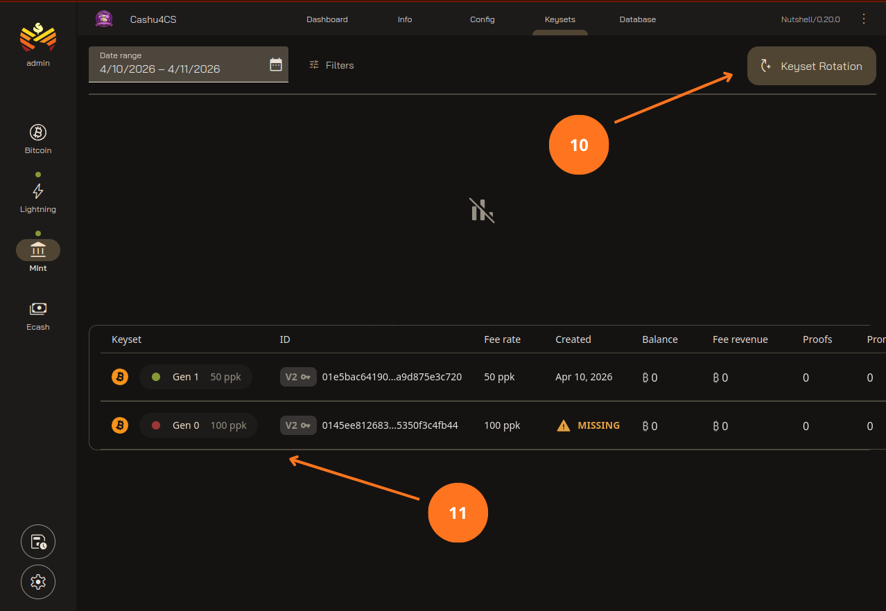
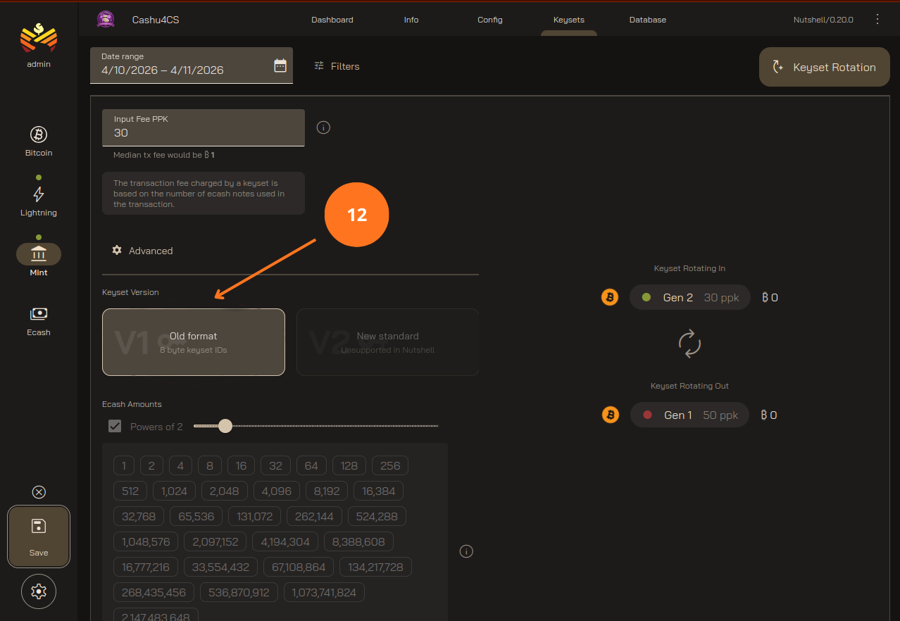
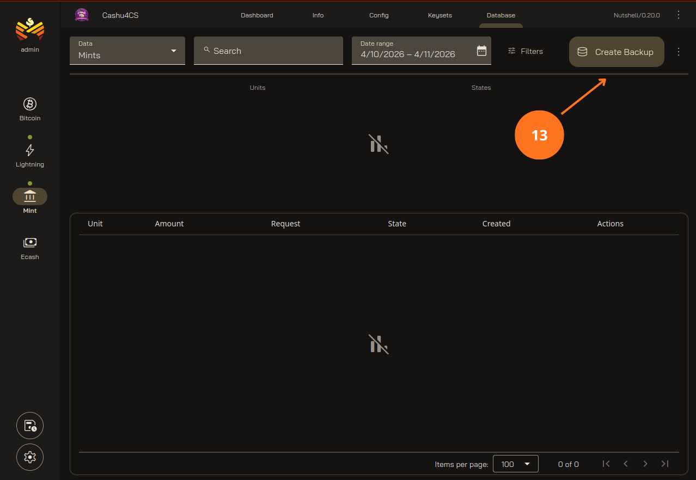

Managing Cashu Mint with Orchard
Orchard is a web tool that allows us to have greater control over operations performed in the Cashu Mint, as well as perform some operations on it. It is a tool under development, so we may encounter some bugs. Be prudent.
Initializing Orchard
Access Orchard via https://orchard.cashu4community.xyz (you will do so through your respective domains). The first thing we find is the Orchard initialization screen that asks for the SETUP_KEY. Remember that we generated this in the Infrastructure Configuration step and should have copied it. If you cannot find this key, you can view it in the file app-data/orchard/.env.

- Insert the
SETUP_KEYthat was generated when we configured the infrastructure. If we didn't save it, we can find it in the.envfile withinapp-data/orchard/.env. - Enter the username (it can be admin, orchard, or as you wish).
- Enter a password and confirm it.
- Click the
Startbutton to save the changes.
Orchard Mint Dashboard
Orchard allows displaying information from the Bitcoin node (if we have one installed), Lightning node, and the Cashu Mint. The Bitcoin node and Lightning node sections are informational only; there is not much to do there, so we will focus on the Cashu Mint.

- Displays Mint information such as its name, URL, description, among other data.
- Displays active NUTs in the Cashu Mint.
- Displays data related to Keysets.
- In the Activities view, it shows number of operations, Mint and Melt operations count, % of completed operations, among other data.
Orchard Info Section
In the Info section we can update all Mint information regarding contact details. All can be updated from this view.

- After updating the Mint data, we proceed to save it.
All this information can be edited in the app-data/cashu/.env file in the Mint Information section:
# Mint information
MINT_INFO_NAME="Cashu4CS"
MINT_INFO_DESCRIPTION="The short mint description"
MINT_INFO_DESCRIPTION_LONG="A Cashu4Community Mint for educational purpose"
MINT_INFO_CONTACT=[["email","contact@cashu4community.xyz"], ["twitter","@cashu4community"]]
MINT_INFO_MOTD="Message to users"
MINT_INFO_ICON_URL="https://cashu4community.xyz/images/icons/cashu4community_logo_transparente.png"
MINT_INFO_URLS=["https://mint.cashu4community.xyz"]
MINT_INFO_TOS_URL="https://mint.host/tos"Orchard Config Section
Currently the Config section is not functional, and everything shown here is informational, such as the maximum and minimum in a mint or melt operation, enabling or disabling Redis, among other options. By the way, these options are present in the .env file. According to the developer, these functions via RPC are not implemented.

Orchard Keysets Section
From this section we can configure a new keyset without having to use the command line. It has one limitation at the moment: it only works with version v1 keysets; the latest Nutshell update incorporates version v2.

- If we want to add a new Keyset, we can do it here.
- List of existing Keysets in the Mint.
- After selecting the fee to use, we select the keyset version. At the moment Orchard only supports v1.

Orchard Database Section
This section displays information stored in the database such as Mint and Melt operations. You can perform database backups among other display options.

- By clicking the
Create Backupbutton we can perform a database backup.